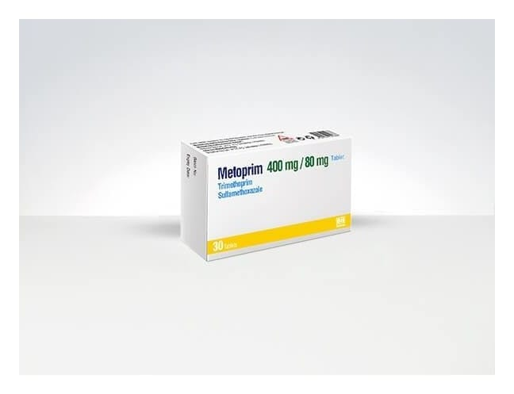

Metoprim 400 mg/80 mg Tablet, 30 Adet

Ne için kullanılır
KT · Bölüm 1METOPRİM 30 tablet içeren blister ambalajlarda sunulmaktadır. METOPRİM iki yüzü bombeli, yuvarlak tabletlerdir. Etkin madde olarak trimetoprim ve sülfametoksazol içerir. METOPRİM, bakterileri öldürerek etki eden antibakteriyel bir ilaç türüdür. METOPRİM tabletleri: • Pneumocystis jiroveci (P.carinii)’nin neden olduğu akciğer enfeksiyonlarını tedavi etmek veya önlemek için • Toksoplazmozis’i (az pişmiş et veya kedi dışkısı ile geçer) tedavi etmek veya önlemek için • Nokardiozis’i (apselere neden olan bakteriyel enfeksiyon) tedavi etmek veya önlemek için • Akut komplikasyonsuz üriner sistem enfeksiyonlarını (örn. sistit) tedavi etmek için
• Orta kulak iltihabını (akut otitis media) tedavi etmek için • Uzun süreli bronşitin (bronş iltihabı) kötüleşmesini tedavi etmek için kullanılır.
Antibakteriyel ajanların uygun kullanımı ile ilgili resmi kılavuzlar göz önüne alınmalıdır.
METOPRİM 18 yaşından büyük erişkinler, 12 yaşından 18 yaşına kadar olan çocukların tedavisinde endikedir.